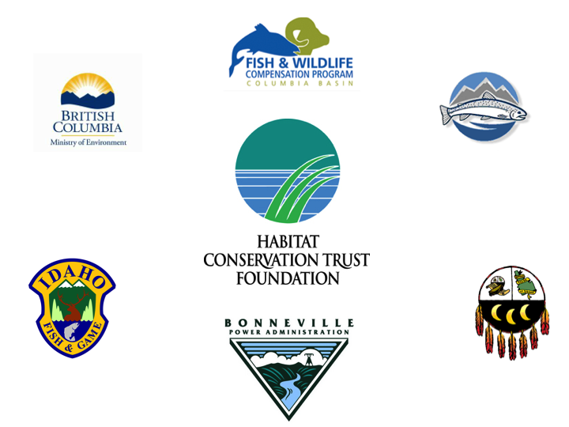

klexdatr is an R package of six relational tibbles from the Kootenay Lake Large Trout Exploitation study.
ls("package:klexdatr") # the six tibbles
#> [1] "capture" "deployment" "detection" "recapture" "section"
#> [6] "station"
library(tibble) # for prettier printing
capture
#> # A tibble: 245 x 9
#> Capture DateTimeCapture SectionCapture Species Length Weight Reward1
#> <fct> <dttm> <fct> <fct> <int> <dbl> <int>
#> 1 F075 2008-05-24 10:40:00 S25 Bull T… 545 1.75 0
#> 2 F076 2008-05-24 11:10:00 S25 Bull T… 654 3.4 0
#> 3 F084 2008-06-05 08:01:00 S16 Bull T… 553 NA 0
#> 4 F100 2009-05-02 13:31:00 S21 Bull T… 643 2.75 100
#> 5 F104 2009-05-03 11:17:00 S22 Bull T… 567 2 100
#> 6 F129 2009-05-07 09:11:00 S21 Bull T… 703 3.9 100
#> 7 F133 2009-05-07 13:58:00 S21 Bull T… 712 3.65 100
#> 8 F137 2009-05-08 11:16:00 S21 Bull T… 572 1.9 100
#> 9 F141 2009-05-20 15:13:00 S16 Bull T… 564 2.2 100
#> 10 F143 2009-05-21 08:00:00 S16 Bull T… 595 2.4 100
#> # … with 235 more rows, and 2 more variables: Reward2 <int>,
#> # DateTimeTagExpire <dttm>
recapture
#> # A tibble: 54 x 8
#> DateTimeRecapture Capture SectionRecapture TBarTag1 TBarTag2 TagsRemoved
#> <dttm> <fct> <fct> <lgl> <lgl> <lgl>
#> 1 2009-04-05 12:00:00 F006 S25 TRUE TRUE TRUE
#> 2 2009-05-23 12:00:00 F131 S16 TRUE TRUE TRUE
#> 3 2009-09-10 12:00:00 F097 S14 TRUE TRUE TRUE
#> 4 2009-10-06 12:00:00 F169 S08 TRUE TRUE TRUE
#> 5 2009-10-10 12:00:00 F076 S30 TRUE TRUE TRUE
#> 6 2009-10-12 12:00:00 F099 S10 TRUE TRUE TRUE
#> 7 2009-10-14 12:00:00 F112 S16 TRUE TRUE TRUE
#> 8 2009-10-16 12:00:00 F111 S27 TRUE TRUE TRUE
#> 9 2010-01-23 12:00:00 F197 S27 TRUE TRUE TRUE
#> 10 2010-01-28 12:00:00 F075 S23 TRUE TRUE TRUE
#> # … with 44 more rows, and 2 more variables: Released <lgl>, Public <lgl>Installation
To install the latest release from CRAN
install.packages("klexdatr")To install the developmental version from GitHub
# install.packages("remotes")
remotes::install_github("poissonconsulting/klexdatr")Information
The study which ran from 2008 to 2014 caught, tagged and released large Rainbow Trout and Bull Trout in Kootenay Lake by boat angling.
The fish were tagged with internal acoustic tags and/or high reward external tags and subsequently detected by an acoustic receiver array as well as reported by anglers.
The data are analysed by Thorley and Andrusak (2017) to estimate the natural and fishing mortality of both species.
There is also a shiny app to view the fish movement data.
Code of Conduct
Please note that the klexdatr project is released with a Contributor Code of Conduct. By contributing to this project, you agree to abide by its terms.
Acknowledgements

The project was primarily funded by the Habitat Conservation Trust Foundation.
The Habitat Conservation Trust Foundation was created by an act of the legislature to preserve, restore and enhance key areas of habitat for fish and wildlife throughout British Columbia. Anglers, hunters, trappers and guides contribute to the projects of the Foundation through licence surcharges. Tax deductible donations to assist in the work of the Foundation are also welcomed.
The project was partially funded by the Fish and Wildlife Compensation Program on behalf of its program partners BC Hydro, the Province of B.C., Fisheries and Oceans Canada, First Nations and the public who work together to conserve and enhance fish and wildlife impacted by the construction of BC Hydro dams.
Annual operation and maintenance for VR2W arrays used in this study were completed by Ministry of Forests, Lands and Natural Resource Operations (MFLNRO) and funded by the Fish and Wildlife Compensation Program (FWCP) in conjunction with the Bonneville Power Administration (BPA) through the Northwest Power and Conservation Council’s Fish and Wildlife Program, in co-operation with the Idaho Department of Fish and Game (IDFG), and the Kootenai Tribe of Idaho (KTOI). The Freshwater Fish Society of British Columbia (FFSBC) provided tag rewards